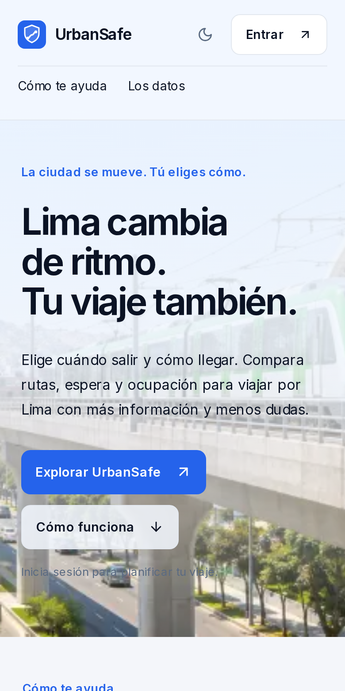
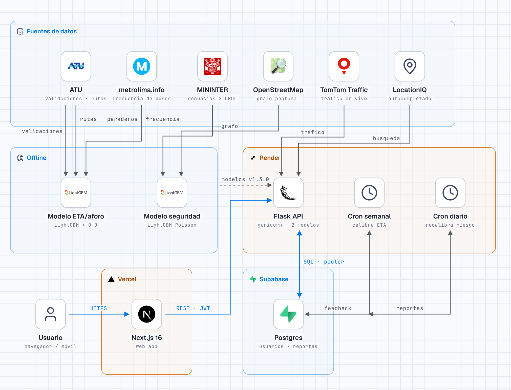

DS-3022 · Desarrollo de Producto de Datos · UTEC 2026-II
UrbanSafe AI
Ecosistema de movilidad predictiva y segura para Lima: ¿subo a la próxima unidad? ¿por dónde camino?
Abrir la aplicación Repositorio API (Swagger)
Qué hace
Eje 1. Pronostica la demanda horaria (LightGBM), estima la ocupación a bordo con una matriz origen-destino y recomienda abordar, esperar o cambiar de paradero.
Eje 2. Calcula la ruta peatonal que equilibra distancia y denuncias registradas: −43,8 % de denuncias con +8,7 % de distancia (test 2024).
Demostración
Video demo: enlace pendiente (el equipo debe pegarlo aquí).
Arquitectura

Equipo
- Elmer Jose Manuel Villegas Suarez — Data Engineer
- Alessandro Facundo Freed Monzón Gallegos — Data Product Manager y AI/ML Developer
- Juan David Velo Poma — Data Scientist
Ejecutar
cp .env.example .env && docker compose up --build
Instrucciones completas en el README. La API gratuita tarda ~50 s en despertar.
Límites
Las denuncias no equivalen al delito (subregistro y sesgo); el modelo ordena calles, no garantiza seguridad. Ver el informe final.